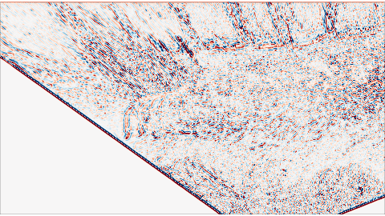

Introduction
pyOpenRiverCam in a nutshell
pyOpenRiverCam is a Application Programming Interface (API) to preprocess, reproject, and analyze videos of rivers, in order to estimate river flows. Below we provide an overview of all functionalities in a nutshell:
Feature |
Example |
|---|---|
Create geographical
awareness of your
videos using your
own field
observations
|

|
Extract frames
your original video
into a array-like
manageable format
using the xarray
library.
|

|
Enhance frames to
improve visibility
of tracers
|
|
Reproject frames
to meters-distance
planar views
|

|
Enhance gradients
for improved feature
detection
|
 |
Estimate flow
velocity at the
water surface
|

|
Estimate river
discharge over a
supplied cross-
section
|

|
Export preprocessed
frames to animation
|
Above examples were generated with this export
functionality
|
Plot combined
views using
matplotlibconvenience methods
in local, camera
or geographical
perspectives
|
|
Perform scientific
analysis and store
results to files
with
xarray datamodels
|
# perform piv analysis on treated frames
piv = preprocessed.frames.get_piv()
# filter piv results with pyorc filters
piv_filt = piv.velocimetry.filter_temporal()
# get mean over time using xarray funcs
piv_mean = piv_filt.mean(
dim="time", keep_attrs=True
)
# store results to netcdf using xarray
piv._mean.to_netcdf("my_first_piv.nc")
|
Note
Documentation is currently being established. Please come back later for more information.